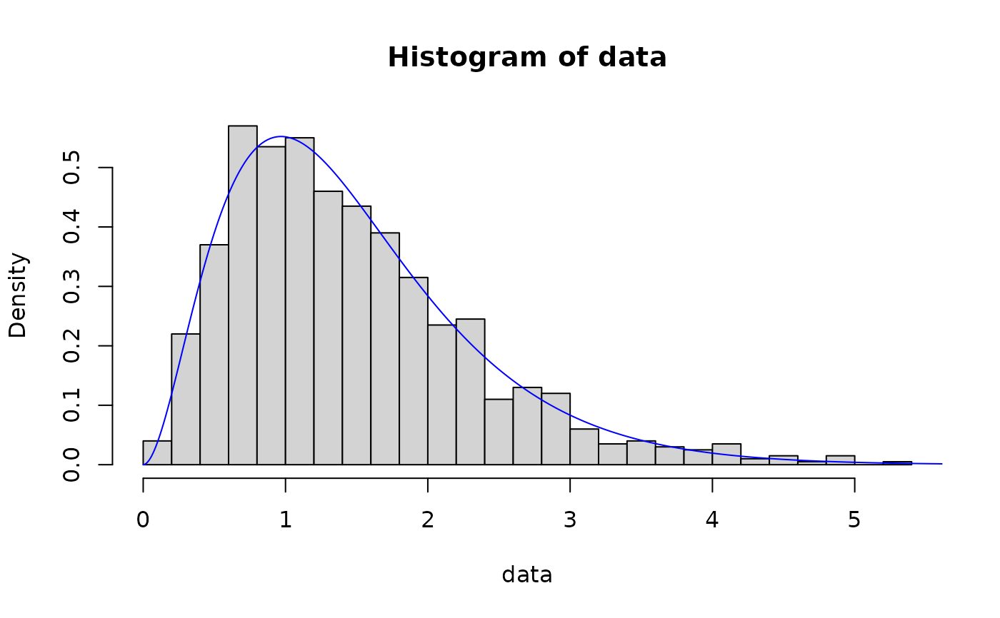
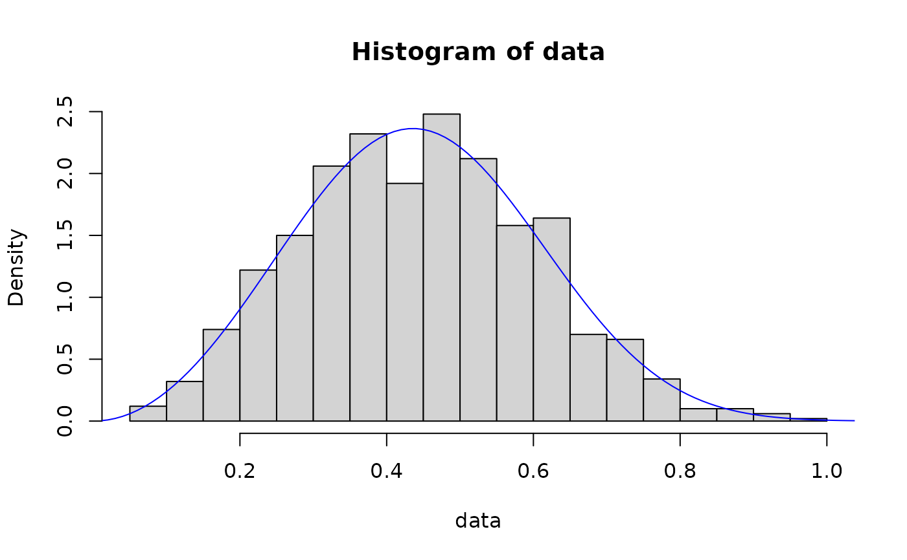
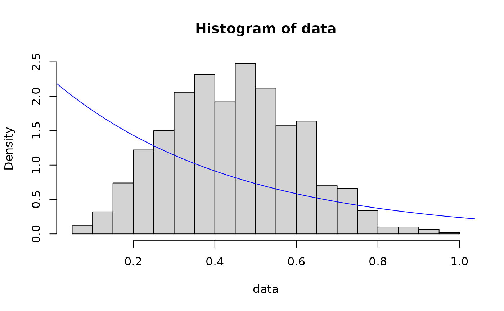
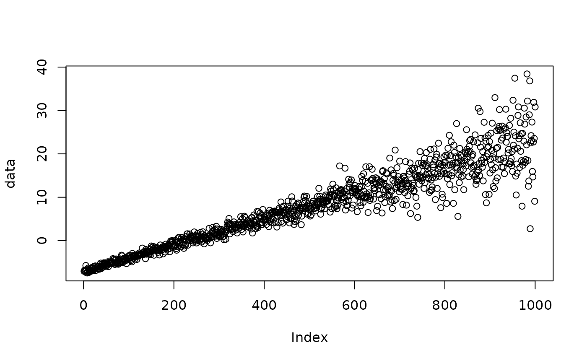
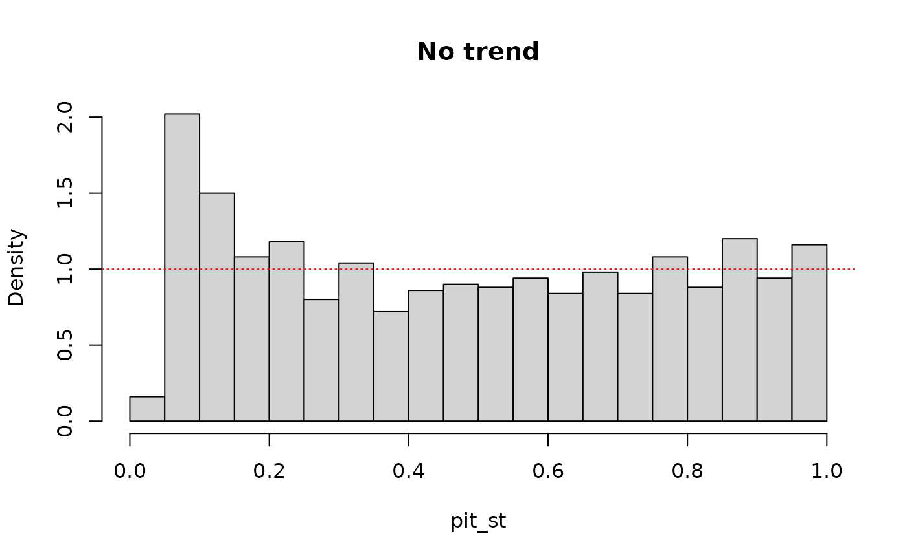
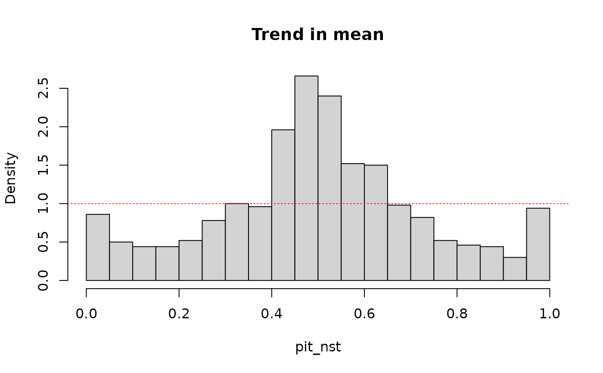

Function to fit a specified distribution to a vector of data. Returns the estimated distribution and relevant goodness-of-fit statistics.
Arguments
- data
A numeric vector.
- dist
character string specifying the distribution to be fit to the data; one of
'empirical','kde','norm','lnorm','logis','llogis','exp','gamma', and'weibull'.- method
A character string coding for the fitting method:
"mle"for 'maximum likelihood estimation',"mme"for 'moment matching estimation',"qme"for 'quantile matching estimation',"mge"for 'maximum goodness-of-fit estimation' and"mse"for 'maximum spacing estimation'.- preds
data frame of predictor variables on which the estimated distribution should depend.
- n_thres
minimum number of data points required to estimate the distribution; default is 10.
- ...
Value
A list containing the estimated distribution function (F_x), its parameters
(params), and properties of the fit such as the AIC and
Kolmogorov-Smirnov goodness-of-fit statistic (fit). If the estimated distribution
function depends on covariates, then the gamlss model fit is returned as the
parameters.
Details
This has been adapted from code available at https://github.com/WillemMaetens/standaRdized.
data is a numeric vector of data from which the distribution is to be estimated.
dist is the specified distribution to be fit to data. This must be one of
'empirical', 'kde', 'norm', 'lnorm', 'logis', 'llogis',
'exp', 'gamma', and 'weibull'. These correspond to the following
distributions: 'empirical' returns the empirical distribution function of data,
'kde' applies (normal) kernel density estimation to data, while 'norm',
'lnorm', 'logis', 'llogis', 'exp', 'gamma', and
'weibull' correspond to the normal, log-normal, logistic, log-logistic, exponential,
gamma, and Weibull distributions, respectively.
By default, dist = 'empirical', in which case the distribution is estimated
empirically from data. This is only recommended if there are at least 100 values
in data, and a warning message is returned otherwise. Parametric distributions
are more appropriate when there is relatively little data,
or good reason to expect that the data follows a particular distribution.
Kernel density estimation dist = 'kde' provides a flexible compromise between
using empirical methods and parametric distributions.
n_thres is the minimum number of observations required to fit the distribution.
The default is n_thres = 10. If the number of values in data is
smaller than na_thres, an error is returned. This guards against over-fitting,
which can result in distributions that do not generalise well out-of-sample.
method specifies the method used to estimate the distribution parameters.
This argument is redundant if dist = 'empirical' or dist = 'kde'.
Otherwise, fit_dist essentially provides a wrapper for
fitdist, and further details can be found in the corresponding
documentation. Additional arguments to fitdist
can also be specified via ....
Where relevant, the default is to estimate parameters using maximum likelihood estimation,
method = "mle", though several alternative methods are also available; see
fitdist. Parameter estimation is also possible using L-moment
matching (method = 'lmme'), for all distribution choices except the log-logistic
distribution. In this case, fit_dist is essentially a wrapper for the lmom
package.
The distribution can also be non-stationary, by depending on some predictor variables or covariates.
These predictors can be included via the argument preds, which should be a data frame
with a separate column for each predictor, and with a number of rows equal to the length of
data. In this case, a Generalized Additive Model for
Location, Scale, and Shape (GAMLSS) is fit to data using the predictors in preds.
It is assumed that the mean of the distribution depends linearly on all of the predictors.
Variable arguments in ... can also be used to specify relationships between the
scale and shape parameters of the distribution and the predictors; see examples below.
In this case, fit_dist is essentially a wrapper for gamlss,
and users are referred to the corresponding documentation for further implementation details.
References
Rigby, R. A., & Stasinopoulos, D. M. (2005): `Generalized additive models for location, scale and shape', Journal of the Royal Statistical Society Series C: Applied Statistics 54, 507-554. doi:10.1111/j.1467-9876.2005.00510.x
Delignette-Muller, M. L., & Dutang, C. (2015): `fitdistrplus: An R package for fitting distributions', Journal of Statistical Software 64, 1-34. doi:10.18637/jss.v064.i04
Allen, S. & N. Otero (2023): `Standardised indices to monitor energy droughts', Renewable Energy 217, 119206. doi:10.1016/j.renene.2023.119206
See also
fitdist gamlss lmom
Examples
N <- 1000
shape <- 3
rate <- 2
x <- seq(0, 10, 0.01)
### gamma distribution
# maximum likelihood
data <- rgamma(N, shape, rate)
out <- fit_dist(data, dist = "gamma")
hist(data, breaks = 30, probability = TRUE)
lines(x, dgamma(x, out$params[1], out$params[2]), col = "blue")

# method of moments
out <- fit_dist(data, dist = "gamma", method = "mme")
hist(data, breaks = 30, probability = TRUE)
lines(x, dgamma(x, out$params[1], out$params[2]), col = "blue")
# method of l-moments
out <- fit_dist(data, dist = "gamma", method = "lmme")
hist(data, breaks = 30, probability = TRUE)
lines(x, dgamma(x, out$params[1], out$params[2]), col = "blue")
## weibull distribution
# maximum likelihood
data <- rweibull(N, shape, 1/rate)
out <- fit_dist(data, dist = "weibull")
hist(data, breaks = 30, probability = TRUE)
lines(x, dweibull(x, out$params[1], out$params[2]), col = "blue")
# method of l-moments
out <- fit_dist(data, dist = "weibull", method = "lmme")
hist(data, breaks = 30, probability = TRUE)
lines(x, dweibull(x, out$params[1], out$params[2]), col = "blue")

## exponential distribution
# method of moments
out <- fit_dist(data, dist = "exp", method = "mme")
hist(data, breaks = 30, probability = TRUE)
lines(x, dexp(x, out$params), col = "blue")

## logistic distribution
x <- seq(-10, 20, 0.01)
# maximum likelihood
data <- rlogis(N, shape, rate)
out <- fit_dist(data, dist = "logis")
hist(data, breaks = 30, probability = TRUE)
lines(x, dlogis(x, out$params[1], out$params[2]), col = "blue")
##### non-stationary estimation using gamlss
## normal distribution
x <- seq(-10, 20, length.out = N)
data <- rnorm(N, x + shape, exp(x/10))
plot(data)

preds <- data.frame(t = x)
out_st <- fit_dist(data, dist = "norm")
out_nst <- fit_dist(data, dist = "norm", preds = preds)
out_nst2 <- fit_dist(data, dist = "norm", preds = preds, sigma.formula = ~ .)
# pit values without trend
pit_st <- out_st$F_x(data, out_st$params)
hist(pit_st, breaks = 30, probability = TRUE, main = "No trend")
abline(1, 0, col = "red", lty = "dotted")

# pit values with trend in mean
pit_nst <- out_nst$F_x(data, out_nst$params, preds)
hist(pit_nst, breaks = 30, probability = TRUE, main = "Trend in mean")
abline(1, 0, col = "red", lty = "dotted")

# pit values with trend in mean and sd
pit_nst2 <- out_nst2$F_x(data, out_nst2$params, preds)
hist(pit_nst2, breaks = 30, probability = TRUE, main = "Trend in mean and standard deviation")
abline(1, 0, col = "red", lty = "dotted")
 ## log normal distribution
x <- seq(0.01, 10, length.out = N)
data <- rlnorm(N, (x + shape)/3, 1/rate)
plot(data)
preds <- data.frame(t = x)
out <- fit_dist(data, dist = "lnorm", preds = preds)
#> GAMLSS-RS iteration 1: Global Deviance = 6776.554
#> GAMLSS-RS iteration 2: Global Deviance = 6776.554
pit <- out$F_x(data, out$params, preds)
hist(pit, breaks = 30, probability = TRUE, main = "PIT values for non-stationary fit")
abline(1, 0, col = "red", lty = "dotted")
## log normal distribution
x <- seq(0.01, 10, length.out = N)
data <- rlnorm(N, (x + shape)/3, 1/rate)
plot(data)
preds <- data.frame(t = x)
out <- fit_dist(data, dist = "lnorm", preds = preds)
#> GAMLSS-RS iteration 1: Global Deviance = 6776.554
#> GAMLSS-RS iteration 2: Global Deviance = 6776.554
pit <- out$F_x(data, out$params, preds)
hist(pit, breaks = 30, probability = TRUE, main = "PIT values for non-stationary fit")
abline(1, 0, col = "red", lty = "dotted")